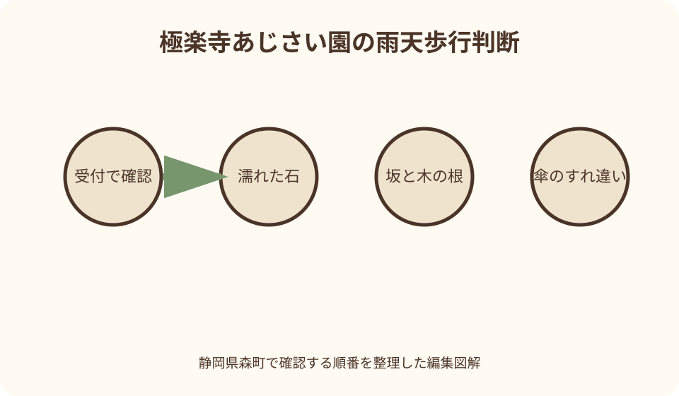
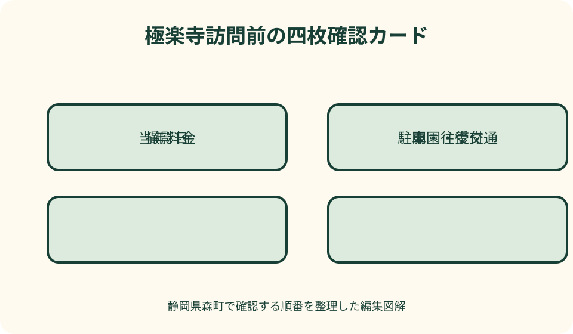

季節の花・寺院・あじさい｜最終確認 2026-08-10
静岡県森町・極楽寺のあじさい｜開花・拝観・雨の日の歩き方
極楽寺は静岡県森町一宮にある寺院で、参道から裏山にかけて咲くあじさいから『あじさい寺』として案内されています。見頃だけを追うと、開園期間、拝観受付、雨で滑りやすい坂、駐車待ちを見落とします。町公式の当年ページで花と運営条件を確認し、寺院へ参拝する一日として準備しましょう。

極楽寺を『花の会場』だけにしない
森町観光協会は極楽寺を神社・仏閣の観光情報として掲載し、古寺とあじさいの関係を紹介しています。季節の花を鑑賞できる場所である前に、信仰の場へ参拝するという順序を忘れないことが出発点です。
境内のあじさいは、平らな花壇を一周するだけの配置ではなく、参道から裏山の木立へ広がると町と観光協会が案内しています。移動には坂、段差、幅の限られる場所がある前提で準備します。
あじさい寺という愛称は、寺の由来や花にまつわる伝承と結び付いています。色や株数だけを撮って帰るのではなく、由来の案内を読み、手を合わせる時間を旅程に残します。
滞在時間は写真枚数から決めません。受付、参拝、上り、鑑賞、下り、雨具を整える時間まで含め、同行者のうち最も慎重に歩く人へ合わせます。
花の時期は拝観者が集中します。静かな寺を想像していても、通路で立ち止まれない場面があります。一枚を撮り直すことより、人が安全にすれ違えることを優先します。
開花は当年写真の撮影日から判断する
森町公式は、極楽寺あじさい園の当年ページで複数回の写真と開花状態を掲載しています。ページの更新日だけでなく、各写真が撮影された日を見て、情報の新しさを確かめます。
『咲き始め』『見頃』『散り始め』などの表現は、撮影時点の目安です。訪問日までに雨や高温が続けば状態は動くため、その語を未来の日付への保証として使いません。
入口付近と裏山で日当たりや風通しが異なれば、園内の花が一斉に同じ段階とは限りません。公開写真の背景を見比べ、園全体を一つの数字だけで理解しないようにします。
最新写真が数日前なら、その後の天気を重ねます。強い雨や風があった場合は花だけでなく足元も変わるため、開花と歩行条件を同時に再評価します。
更新が途切れたときは、過去年度の同じ時期へ戻って補完しません。当年の観光協会、町公式、掲載された寺院の問合せ先から現在の案内を探します。
開園・拝観・料金は四項目を同じ年でそろえる
確認する第一項目は、あじさい園が訪問日に開いているかです。町公式では開花により開園期間が動く可能性を示すため、前年の日付を手帳へ移しても根拠にはなりません。
第二項目は受付時間と最終入場です。閉まる時刻だけでなく、入園受付が先に終わる場合があります。到着が遅い日は、駐車後の徒歩と受付列を差し引きます。
第三項目は当年の料金と対象区分です。大人、子ども、未就学児などの扱いが掲載されていても、訪問する年のページで再確認し、現金その他の支払方法は必要なら寺院へ尋ねます。
第四項目は閉園や臨時変更の告知です。花の状態、荒天、境内事情で運営が変わる可能性を考え、前日に保存した画像ではなく出発直前に公開ページを開きます。
団体、撮影目的、介助が必要な参拝など個別条件がある場合は、通常の入園案内だけで判断しません。混雑する当日を避け、事前に問合せて可能な範囲を確認します。
駐車場は住所検索の前に確認する
極楽寺の所在地は町と観光協会の案内で確認できますが、寺の住所は駐車区画そのものではありません。ナビの到着点だけに従うと、門前や狭い生活道路で停止する恐れがあります。
町公式の当年ページに駐車情報が十分でない場合は、掲載された問合せ先へ、来訪者用区画、入口、満車時の扱いを事前に確認します。近くの空地を代用する考えは持ちません。
混雑時は駐車列の最後尾が安全に待てる位置とは限りません。現地係員の誘導がなければ路上で待たず、決めておいた別の目的地へ移る判断が必要です。
同乗者を門前で降ろす場合も、駐停車できる場所だと確認できなければ行いません。傘を開く人と車が重なる雨の日ほど、乗降は指定場所でまとめます。
帰りは車へ戻る経路も見ます。上りと下りで足の負担が変わり、濡れた靴での運転にも影響します。座って靴底を拭き、水分を取ってから出発できる余裕を置きます。
車椅子、歩行器、ベビーカーを使う同行者がいる場合は、写真から通行可能と推測しません。受付までの路面、園内で鑑賞できる範囲、介助車両の乗降を寺院へ事前に相談し、利用できる区域だけで計画します。
雨の日の坂・足元・傘を具体的に備える
あじさいと雨は景観として相性がよくても、裏山へ向かう道の安全とは別です。石、土、落葉、木の根は濡れ方で滑りやすさが変わるため、入口で足裏の感触を確かめます。
靴は溝が残り、かかとが安定し、水が入っても歩幅を保てるものを選びます。新しい革靴や底が平らな靴で、写真のために斜面へ寄る行動は避けます。
傘は大きさより取り回しです。狭い通路ですれ違うときは傘先を人へ向けず、立ち止まれる幅のある場所で高さを調整します。強風なら無理に差し続けません。
荷物は肩掛けだけにせず、両手が使える形にします。片手に傘、片手にスマートフォンを固定すると、よろけたとき支えを取れません。撮影時は安定した場所で止まります。
眼鏡や画面が濡れると足元への注意が落ちます。拭く布を取り出しやすくし、傘を差しながら歩いたまま操作せず、同行者と順番に立ち止まります。
雨脚が強くなったら、奥まで行くことを達成条件にしません。参拝と入口付近の花で戻る短縮案を最初から決めておけば、引き返す判断を失敗と感じずに済みます。
撮影と参拝のマナーを両立する
境内に入ったら、撮影を始める前に参拝場所と歩行方向を確認します。参拝者の正面へ回り込む、合掌している人を背景に入れる、賽銭箱周辺で場所を占めることは避けます。
あじさいへ顔を近づける構図でも、花房や枝を手で引き寄せません。柵や植栽の縁を越えず、望遠や自分の立ち位置で画面を整えます。
三脚、照明、モデル撮影、商品撮影、動画の長回しは、手持ちの記念写真より場所を使います。寺院の許可が必要かを事前に確認し、混雑日に即興で設置しません。
傘とカメラを同時に扱う場合は、傘の水滴を他人や仏具へ落とさない位置で畳みます。屋根の下へ入る前に水を切る場所も、現地の案内へ従います。
投稿する写真には、写り込んだ人の顔、車の番号、寺院内の撮影禁止箇所がないか確認します。公開できる場所と、現地で見るだけにする場所を分けます。

公共交通で訪れる前の確認
極楽寺は森町一宮にあり、遠州森駅前の町なかと同じ徒歩圏だと決めつけないことが重要です。町の観光パンフレットで位置を確認し、駅からの距離と道路を把握します。
公共交通を使う日は、町の交通案内や事業者公式で、訪問日の路線、運行日、最寄りの乗降地点を確認します。寺の開園情報だけでは往復の移動は成立しません。
降車後の徒歩には、坂、雨、受付までの余裕を加えます。地図アプリの最短時間をそのまま採用せず、傘を差して安全に歩ける速度へ下げます。
帰りの便を二候補用意し、早い方に合わせて園を出ます。花をもう一周する判断は、後の便でも自宅側の乗継が成立し、明るいうちに乗降地点へ戻れる場合だけにします。
バスや列車だけで接続が難しい場合は、タクシーの配車を前もって相談します。現地で電話すればすぐ来る前提を置かず、迎車場所を寺院の通行を妨げない地点にします。
自転車を使う場合は、町公式がサイクルラック設置先として極楽寺を紹介した情報があっても、現在の設置場所と利用可否を確認します。雨天の坂道、濡れたブレーキ、荷物の防水を考え、花の時期だから無理に周遊距離を延ばしません。
周辺の花めぐりは二か所まで
森町の初夏には、極楽寺のあじさい以外にも、香勝寺のききょうや小國神社周辺の花しょうぶなどが観光情報に登場します。ただし開園時期と開花の進みは別々です。
二か所を結ぶなら、両方の当年開園、最新撮影、受付終了、駐車を確認します。一方の前年情報しか見つからなければ、極楽寺一か所の計画に戻します。
花めぐりという名称から、徒歩で順番に回れる近接地だと解釈しません。町公式パンフレットを広域表示し、地区間の車移動、駐車、滞在を足して現実的かを見ます。
極楽寺で雨が強くなった場合、次の寺へ急いで移ると濡れた靴と荷物を抱えたまま再び坂を歩くことになります。屋内の食事や買い物へ替える方が適切な日もあります。
花の色を比較するための周遊より、それぞれの寺院で手を合わせ、由来を読む時間を優先します。二か所目は省略可能と書き、渋滞や疲労があれば迷わず外します。
混雑・見頃外・臨時変更の代案
駐車場が満車なら、門前の道路で待つのではなく、事前に用意した町なかの目的へ移ります。空いた頃に戻る場合も、受付終了に間に合うかを再確認します。
園内が混んでいたら、人気の撮影位置へ並ぶ時間の上限を決めます。人が途切れるまで通路に居続けず、背景を小さく切り取る、写真を撮らず眺めるという選択を使います。
咲き始めなら一輪や葉の形、終盤なら色の移り変わりを見るなど、状態に合わせて観察の焦点を変えます。過去の満開写真と同じ景色を要求しません。
臨時閉園や荒天なら、寺の周辺まで行って外から撮る代案にはしません。町公式の観光パンフレットから、営業確認ができた屋内施設や町なかの食事へ変更します。
同行者が坂を不安に感じたら、全員で奥へ進む必要はありません。ただし境内で別行動にする場合は、受付付近など許可された集合場所、戻る時刻、連絡方法を決めます。
暑さと湿度で体調が変わる日もあります。飲料を持ち、木陰があると決めつけず、休憩できる場所を受付で確認します。息が上がった人をその場に残して先へ進まず、全員で引き返します。
良い点
極楽寺のあじさいは、参道から裏山の木立へ広がると公式に案内され、寺院の景観と花を一緒に受け取れる点が特徴です。平面の展示とは異なる奥行きを楽しめます。
森町公式が当年の開園条件と開花写真を一ページで更新するため、旅行者は運営と花の状態を同じ入口から確かめられます。
観光協会には寺院そのものの案内と季節の行事ページがあり、花が植えられた由来や森町の花めぐりとの関係も調べられます。
雨の多い季節でも、濡れた花や木立という晴天とは異なる表情があります。安全に歩ける範囲へ縮めれば、天候を完全な失敗にせず鑑賞できます。
花の状態を町公式の時系列写真で追えるため、単に『咲いたか』だけでなく、訪問日までの変化を考えられます。情報を読んで滞在範囲を選べる点も、この場所を訪ねやすくしています。

注文したい点
当年ページに、駐車場入口、満車時の対応、乗降できる場所を示した図があると、寺の住所へ車が集中することを減らせます。
園内について、坂、階段、休憩場所、雨天時に注意する区間を簡略図で示してほしいところです。歩行に不安がある人が入口で短縮コースを選べます。
公共交通の案内は、固定時刻ではなく、最寄りの乗降地点と運行事業者の最新ページへ結ぶ形が望まれます。車を使わない訪問者が往復を判断しやすくなります。
撮影について、三脚、商用利用、ドローン、人物撮影、SNS公開の扱いを一覧にすると、現地で個別に尋ねる負担と通路占有を減らせます。
開花写真に園内の撮影位置が付けば、入口と裏山の差が分かります。見頃という一語だけでなく、歩ける範囲に花があるかを判断できます。
代案・結論
当年案内がまだ出ていない段階では、過去の開園日や料金を現在の情報として予定表へ入れません。訪問候補だけ残し、町公式の新着を待ちます。
見頃と自分の日程が合わなくても、状態を知ったうえで参拝へ行くか、別の季節へ延ばすかを選べます。花だけを成功条件にしないことが大切です。
雨の日は奥まで歩く予定を外し、入口付近の参拝と鑑賞へ縮めます。駐車混雑なら町なか、公共交通が成立しなければ訪問日変更という代案を先に持ちます。
結論として、撮影日の新しい開花情報、当年の開園・受付・料金、駐車または往復交通、雨天時の歩行を四点セットで確認してから出発します。
大石の視点
私なら、極楽寺を『何株あるか』だけで紹介しません。花の多さは魅力ですが、その花を見るために人が坂で立ち止まり、傘が交差する現実まで書かなければ実用記事にならないからです。
実際に歩いていないのに、坂は楽だった、雨が風情深かったとは言えません。本稿では公式が示す配置から必要な準備を組み立て、現地の状態は訪問者自身が入口で判断できる形にしています。
寺院の花を撮るときは、自分の写真より参拝の流れが先です。人が途切れないなら、その日は人のいない一枚を諦める。それが花と寺を次の人へ渡す振る舞いだと思います。
見頃を外すことより、古い料金や開園日を断定して誰かを困らせる方が問題です。数字は毎年公式へ戻り、記事には戻り方を残す。この役割分担を崩しません。
あじさいは天気で表情を変えますが、人は天気に合わせて予定を小さくできます。奥まで行かない、二か所目をやめる、日を変えるという余白こそ、極楽寺を丁寧に訪ねる準備です。
公式情報・確認先
掲載内容は次の一次情報を基礎に整理しました。営業、料金、催し、交通は変わるため、出発前または手続き前にリンク先で最新情報を確認してください。
- 極楽寺あじさい園について（静岡県森町、2026-08-10確認）
- 森町の花めぐり動画公開（静岡県森町、2026-08-10確認）
- 観光パンフレット（静岡県森町、2026-08-10確認）
- 四季のイベント（静岡県森町観光協会、2026-08-10確認）
- 極楽寺 あじさい寺（静岡県森町観光協会、2026-08-10確認）
- 森町地域公共交通法定計画（静岡県森町、2026-08-10確認）